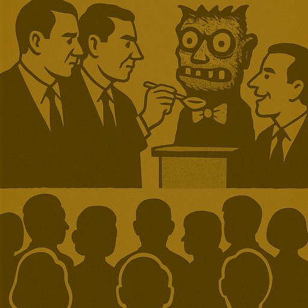

Publicado em 2025-05-25 20:20:15
Por Francisco Gonçalves
Nos últimos tempos, ouvimos figuras do PS e do PSD dizerem, com ar aflito, que não sabem como lidar com o Chega.
É comovente. E também é cómico — se não fosse, acima de tudo, trágico.
O Chega é a criatura do sistema que fingiu combatê-lo.
Foi gestado no ventre da desilusão, alimentado com as sobras da má governação, educado nos corredores da frustração popular.
Mas o sistema? O sistema estava ocupado a fingir que tudo estava bem.
Durante cinquenta anos, os dois partidos que se alternaram no poder:
E agora, de repente, dizem-se “surpreendidos” com o crescimento do Chega.
Como se o populismo tivesse caído de Marte.
O Chega não seduz por ter boas propostas — seduz por apontar o dedo aos culpados certos (mesmo que pelas razões erradas).
Diz o que muitos sentem, mas com o veneno do ressentimento e da simplificação.
Enquanto isso, os partidos tradicionais continuam a falar em “estabilidade orçamental”, “coligações alargadas” e “reformas estruturais” — como se ninguém os ouvisse há 50 anos a dizer o mesmo.
PSD: Não sabemos como travar o populismo.
PS: Precisamos de uma frente democrática.
CHEGA (rindo): Continuem a fazer igual. Eu agradeço.
O Chega é o espelho partido de uma democracia que se esqueceu de ser democracia.
E os seus criadores, hoje assustados, fingem que nunca o alimentaram.
Mas o povo sabe.
E, mais cedo ou mais tarde, saberá escolher não só entre o medo e a farsa — mas por uma nova forma de cidadania.
“A crise do regime não começou com o Chega. Começou com os que fingiram que estavam a governar o povo — quando na verdade estavam apenas a gerir o seu silêncio.”